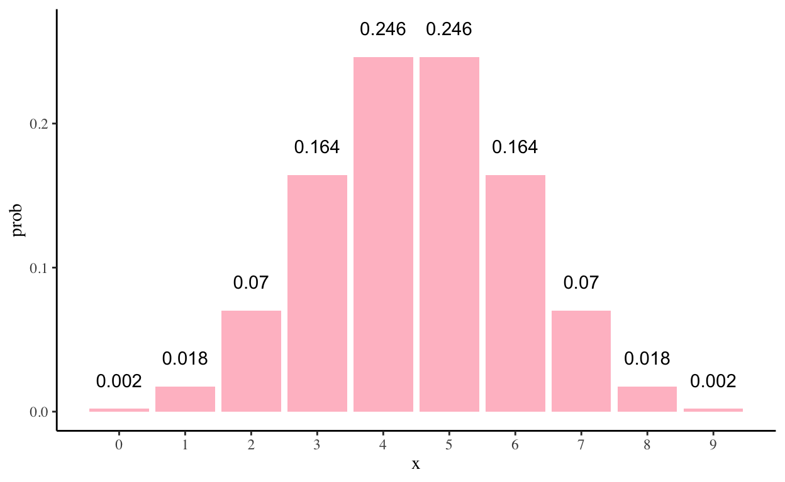

• 13. NHST summary
Links to: Summary. Chatbot tutor. Questions. Glossary. More resources.
Chapter summary
Null Hypothesis Significance Testing is a tool to judge if we should interpret a scientific result as sampling error or as a genuine biological process. The first step is coming up with the null hypothesis and finding a “test statistic” to boil our observations down to a single number. We then find the null distribution of the test statistic under the null model and place our actual observation on this null sampling distribution. We calculate a p-value as the proportion of the null distribution that is “as or more extreme” as our observation (remember to look at both tails). We “reject the null” when our p-value is less than \(\alpha\) (our “false positive rate”), which is set to 0.05 by tradition. We fail to reject the null otherwise. Unfortunately, failing to reject the null does not mean the null is true. This whole business is a bit tricky, so make sure you don’t misinterpret your p-value.
![A two-panel comic by @epilielle explaining the correct interpretation of confidence intervals. **Panel 1:** Says "People think confidence intervals are like archery," and shows a variable "true value" (an arrow) being shot at a fixed "confidence interval" (a target). **Panel 2** says: "But really confidence intervals are more like ring toss," and shows a variable "confidence interval" (a ring) being tossed at a fixed "true value" (a post), illustrating that the parameter is fixed while the interval is what varies and might capture it.](../../figs/stats_foundations/uncertainty/CIs.png)
Chatbot tutor
Please interact with this custom chatbot (link here). I have made to help you with this chapter. I suggest interacting with at least ten back-and-forths to ramp up and then stopping when you feel like you got what you needed from it.
Practice Questions
Try these questions!
Q1) Null or alternative? Identify whether each of the following statements is more appropriate as a null hypothesis:
Q2) Assume the null hypothesis is TRUE. Which one of the following statements is true?
Q3) Assume the null hypothesis is FALSE. Which one of the following statements is true?
.
Q2) Assume the null hypothesis is TRUE. Which one of the following statements is true?
Q3) Assume the null hypothesis is FALSE. Which one of the following statements is true?
- Can parents distinguish their own children by smell alone? To investigate, Porter and Moore (1981) gave new T-shirts to children of nine mothers. Each child wore his or shirt to bed for three consecutive nights. During the day, from waking until bedtime, the shirts were kept in individually sealed plastic bags. No scented soaps or perfumes were used during the study. Each mother was given the shirt of her child and that of another, randomly chosen child and asked to identify her own by smell. Eight of nine mothers identified their children correctly. Use this study to answer the following questions, using a two-sided significance level 𝛼 = 0.05.
Q4) \(H_0\): What is the appropriate NULL hypothesis?
Q5) \(H_A\): What is the appropriate ALTERNATIVE hypothesis?
Q5) \(H_A\): What is the appropriate ALTERNATIVE hypothesis?
Remember we should do two-tailed tests!
For the questions below refer to the following figure. Numbers over bars show the probability of x moms guessing right assuming the null hypothesis is true.
Q6) Recall that eight of nine mothers identified their children correctly. Use the numbers on the figure above to estimate a P-value.
Q7) What do we do to the null hypothesis in this case?
Q8) In this case, the null hypothesis
Q9) The prosecutor’s fallacy is the mistaken thought that arises from assuming that
📊 Glossary of Terms
The Null Hypothesis: A skeptical explanation, made for the sake of argument, which suggests that data come from an uninteresting or “boring” population.
The Alternative Hypothesis: A claim that the data do not come from the “boring” population.
The Test Statistic: A single number that summarizes the data. We compare the observed test statistic to its sampling distribution under the null model.
P-value: The probability that a random sample drawn from the null model would be as extreme or more extreme than what is observed.
\(\alpha\): The probability that we reject a true null hypothesis. We can decide what this is, but by convention, \(\alpha\) is usually set at 0.05.
False Positive: Rejecting the null when the null is true.
False Negative: Failing to reject the null when it is false.
Power: The probability of rejecting a false null hypothesis. We cannot directly set this — it depends on sample size and the size of the effect, but we can design experiments aiming for a certain level of power.
Test Statistic: A single number calculated from sample data that summarizes the difference between observations and what is expected under the null hypothesis.
Additional resources
Readings:
Numerous readings from the Scientist Sees Squirrel blog by Stephen B. Heard including: In defence of the P-value, Is “nearly significant” ridiculous?, and Two tired misconceptions about null hypotheses.
Some Natural Solutions to the p-Value Communication Problem—and Why They Won’t Work (Gelman & Carlin, 2017).
Statement on P-values from the American Statistical Association (Wasserstein & Lazar, 2016).
Scientists rise up against statistical significance by Amrhein et al. (2019).
Webapps:
Videos:
P-values and The prosecutor’s falacy from calling bullshit.
Probability, Part 7: What is Null Hypothesis Significance Testing? from Simplistics (QuantPsych). An opiniated but entertaining presentation of p-values & NHST.